How to create and maintain Standard Ops (SOPs), kanban cards, checklists, folders and training records.
This guide walks you through everything an Editor does in SAWO Playbook, step by step, with a screenshot for each screen. Use the contents page to jump straight to the task you need.
Written for
Editors
Covers
SOPs · Kanbans · Checklists · Folders · Skills
Edition
October 2026
About the screenshots
The screenshots come from a demo organisation with example users (Erin Editor, Riley Reviewer, Pat Approver, Sam Operator). Your organisation's menu, names and folders will differ, and your Admin may have switched some features on or off.
SAWO Playbook · Editor User Guide · You can view this guide in a browser or print it / save it as PDF.
SAWO Playbook · Editor User GuideContents
Contents
Click any line to jump to it.
SAWO Playbook · Editor User Guide1 · Getting started
1Getting started
What the Editor role is for, how to sign in, and how the screen is laid out.
1.1What an Editor can do
Editors write and maintain content. You create SOPs and kanban cards and send them for approval. Approvers check your work and publish it. Your Admin can change role permissions, so your account may have a few more or fewer options than listed here.
Task
Editor
View published SOPs and kanban cards
✓ Yes
Create and edit SOPs and kanban cards (as drafts)
✓ Yes
Submit drafts for approval
✓ Yes
Create, rename and organise folders
✓ Yes
Run checklists and see everyone's checklist runs
✓ Yes
Record training for operators assigned to you
✓ Yes
Print, share and export PDFs, QR codes and links
✓ Yes
See your own activity in Analytics
✓ Yes
Approve or publish (yours or anyone else's)
✗ No (Pre Approvers and Approvers do this)
Delete SOPs or kanban cards
✗ No
Manage users, groups, roles and organisation settings
✗ No (Admins only)
1.2Signing in for the first time
Your Admin creates your account. You'll receive either an invitation link by email or a temporary password.
Open SAWO Playbook in your browser and enter your Email and Password, then click Sign in.
If you signed in with a temporary password, the Set your password screen opens. Enter the temporary password, then your new password twice (at least 10 characters), and click Set password and continue.
If you got an invitation link instead, open it, enter your name and choose a password. You're signed in straight away.
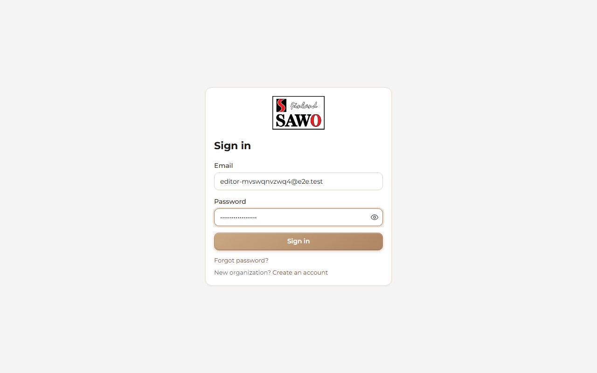
Figure 1. Sign in.
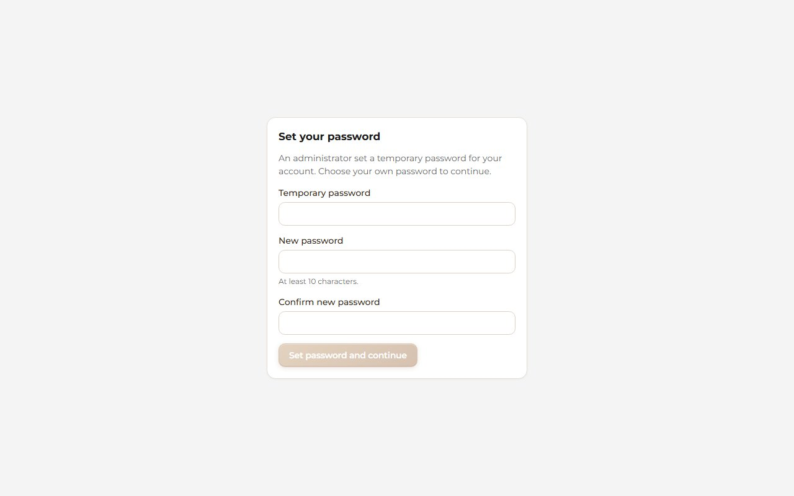
Figure 2. Set your own password at first sign-in.
Forgot your password? Click Forgot password? on the sign-in screen and follow the emailed link.
1.3Finding your way around
After signing in you land on Standard Ops. The screen has three parts:
Sidebar (left). The main menu. Work holds your day-to-day screens and Review holds Approvals and Analytics. Your name and role are at the bottom, with Logout. Click the small arrow on its edge to collapse it.
Header (top). The page title, the global search box and the notifications bell, which shows items waiting for you.
Toolbar (under the header). The current page's own search, sort, filter, view buttons and the + Create New button.
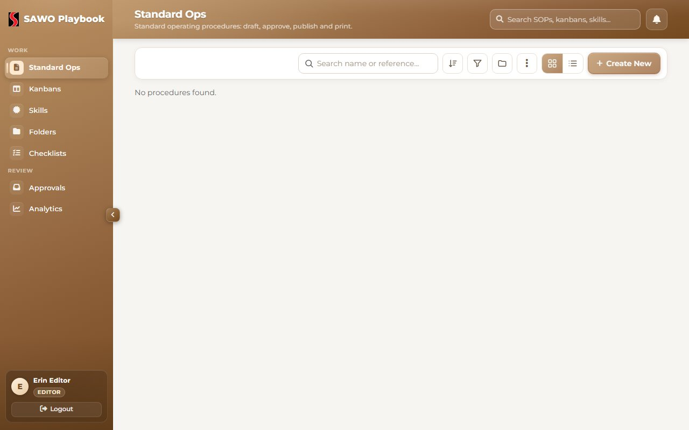
Figure 3. The Standard Ops page right after signing in.
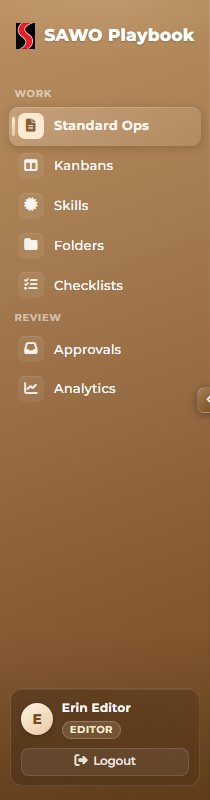
Figure 4. The sidebar for an Editor.
Menu item
What it's for
Standard Ops
Create, edit, view, print and share SOPs.
Kanbans
Kanban cards for parts and re-ordering.
Skills
The training matrix: who is trained on which SOP, and how well.
Folders
Organise SOPs into folders and subfolders.
Checklists
Checklist runs recorded against Checklist SOPs.
Approvals
Everything you've submitted and where it is in the approval process.
Analytics
Your activity: views, edits and checklist runs.
1.4How approval works
Nothing you write goes live straight away. Each new SOP or SOP version, and each new or changed kanban card, follows this path:
DraftYou (Editor)›Pending pre-approvalPre Approver›Pending approvalApprover›ApprovedApprover / Publisher›PublishedLive for everyone
Your submission is routed to your group(s). Only Pre Approvers and Approvers in those groups see it.
At any stage a reviewer can Reject it with a reason. It comes back to you as a draft so you can fix it and submit again.
While a new version is in review, operators keep seeing the current published version. Nothing changes for them until the new one is published.
You can't approve your own work.
Your organisation's setupAdmins decide whether approval is switched on and how many approvers are needed. If approval is off, the editor's main button reads Finish & Save instead of Finish & Submit, and your changes publish directly.
SAWO Playbook · Editor User Guide2 · Standard Ops (SOPs)
2Standard Ops (SOPs)
An SOP is a step-by-step procedure with photos, times and safety notes that operators follow, print or scan from a QR code.
2.1Create a new SOP
Click Standard Ops in the sidebar.
Click + Create New in the toolbar (top right).
Enter the Procedure name, e.g. Changeover of die set on press line 2.
Optional: pick a Folder and type a Reference No. Leave the reference blank to get the next number automatically (SOP-0001, SOP-0002 …).
Click Create. The SOP editor opens.
Figure 5.+ Create New is at the top right.
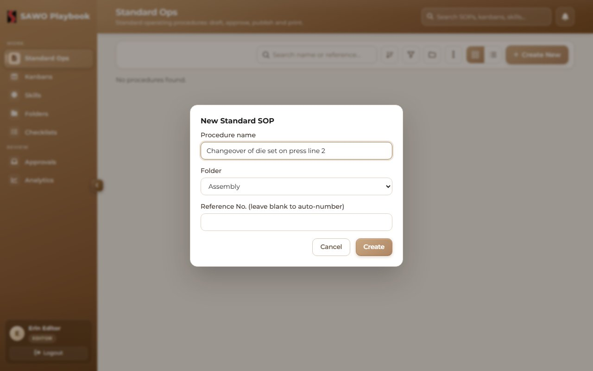
Figure 6. Name the SOP and choose a folder.
2.2Name and SOP configuration
The top of the editor holds the SOP's name and its main settings. The bar at the top shows the version being edited (e.g. v1.001 draft) and the Back, Cancel, Save As Draft and Finish & Submit buttons.
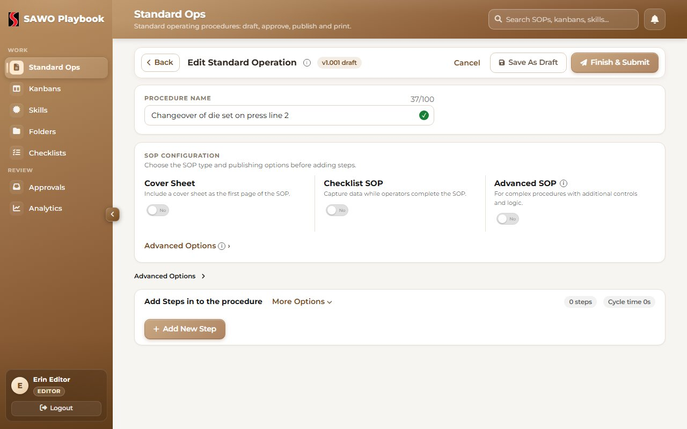
Figure 7. The SOP editor: name, configuration and the steps area.
Setting
What it does
Procedure Name
The title operators see (max. 100 characters). A green tick shows it's saved.
Cover Sheet
Adds a cover page as the first page of the PDF.
Checklist SOP
Lets operators run the SOP as a checklist and record OK / NOT OK / N/A per step. See Checklists.
Advanced SOP
Gives every step its own title. Use it for long or complex procedures.
Advanced Options › (inside the configuration box)
Shows Reference No., Folder, Change summary (what changed in this version) and the Key points and Collaborate switches.
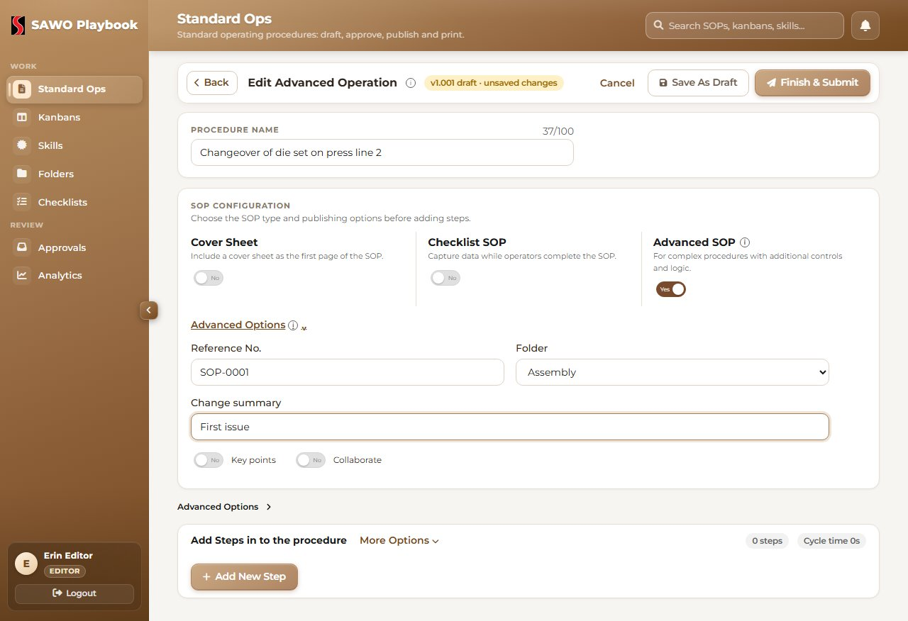
Figure 8. Advanced SOP switched on and Advanced Options opened. Fill in the Change summary so approvers know what changed.
2.3PDF layout options
The second Advanced Options › link, under the configuration box, controls how the printed PDF looks. Each heading opens when you click it:
Language Options: the SOP's language.
Document Control Details: reference number, date raised, revision number and date.
Presentation & Formatting: PDF orientation, steps per page, borders, header/footer colours, and the colours of the Green/Red QR code PDF.
Functional Options: mark the whole SOP as critical, add a video link.
Additional Display Items: e.g. the total time required.
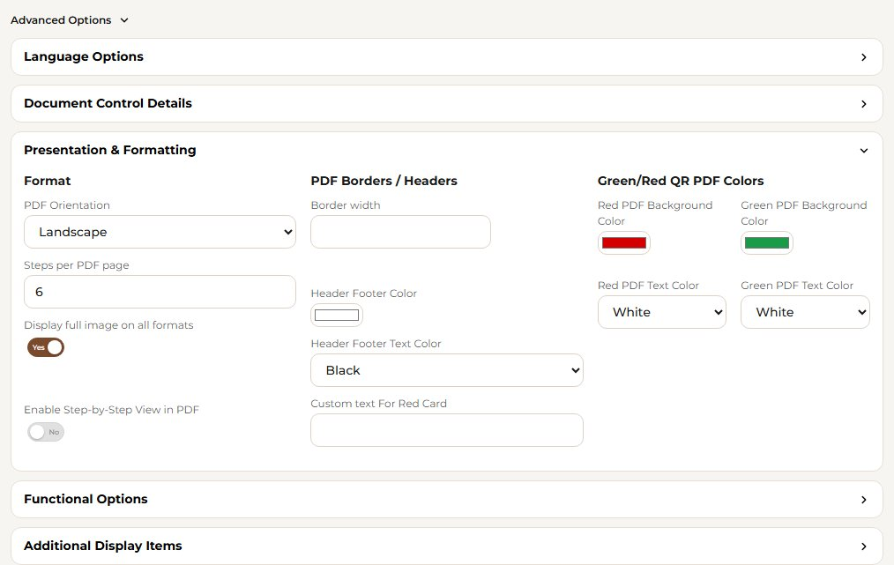
Figure 9. Presentation & Formatting opened.
SAWO Playbook · Editor User Guide2 · Standard Ops (SOPs)
2.4Add and arrange steps
Click + Add New Step at the bottom of the editor.
If Advanced SOP is on, type a Step title.
Type the Description. Use the toolbar for bold, italic, lists and colour. Keep it short: up to 400 characters fit best in the PDF.
Enter the Planned Time as HH:MM:SS. The SOP's cycle time is the total of all steps.
Add a picture: click Add photo or drag an image onto the box. On a phone or tablet you can take a photo directly.
Set the switches on the right if needed (see the table below).
Repeat for each step.
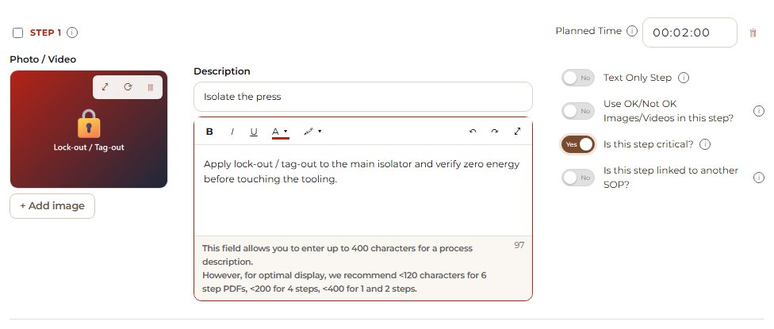
Figure 10. One step: photo on the left, title and description in the middle, switches on the right.
Step switch
Use it when…
Text Only Step
The step needs no photo or video.
Use OK/Not OK Images/Videos
You want to show the right way and the wrong way. The first image is labelled OK and the second NOT OK.
Is this step critical?
The step is safety or quality critical. It's highlighted in red for operators and in the PDF.
Is this step linked to another SOP?
Operators should follow another procedure here. Choose the SOP and operators get a link to it.
Rearranging steps
Under each step: Move Up, Move Down and Insert Step (adds a step below this one).
The bin icon at the top right of a step deletes it.
More Options ⌄ next to Add Steps in to the procedure lets you tick several steps and delete or move them together.
The step count and total Cycle time are shown at the top right of the steps area.
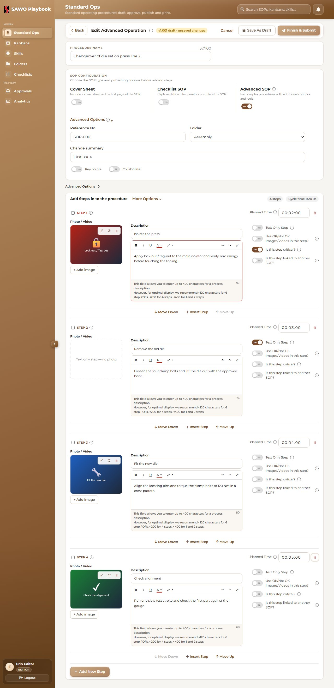
Figure 11. A finished draft with four steps. Step 1 is marked critical.
SAWO Playbook · Editor User Guide2 · Standard Ops (SOPs)
2.5Save as Draft or Finish & Submit
Button
What happens
Save As Draft
Saves your work and keeps you in the editor. Only you and reviewers can see the draft. Come back to it any time with Edit draft.
Finish & Submit
Saves and sends the draft for approval. You need at least one step. You can add a change summary first under Advanced Options.
Cancel / Back
Leaves the editor. Save first, or unsaved changes are lost.
TipSave as draft often while you work on long SOPs, for example after every few steps or photos.
2.6Follow the approval
After you submit, the SOP page opens. The version box (top right) shows the status, e.g. Pending pre-approval, and the group it was Routed to. Further down, the Approvals box lists every decision with the reviewer's name, date and comment.
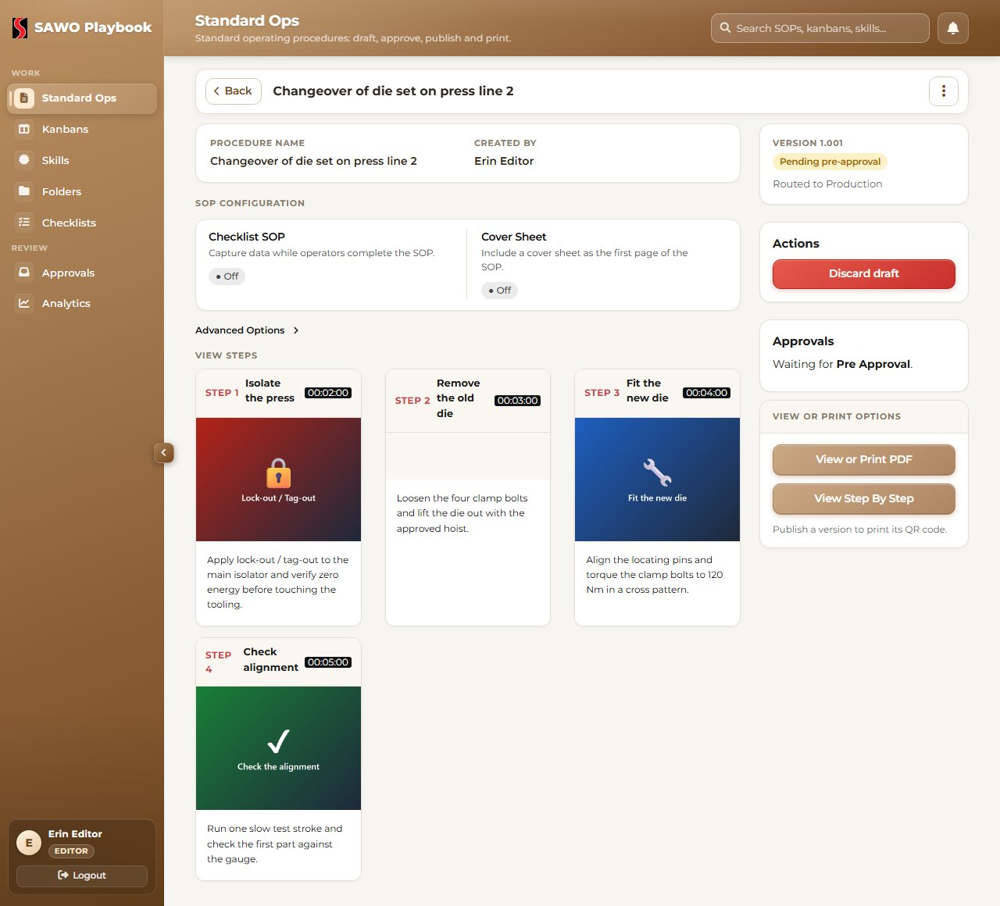
Figure 12. Submitted and waiting for pre-approval.
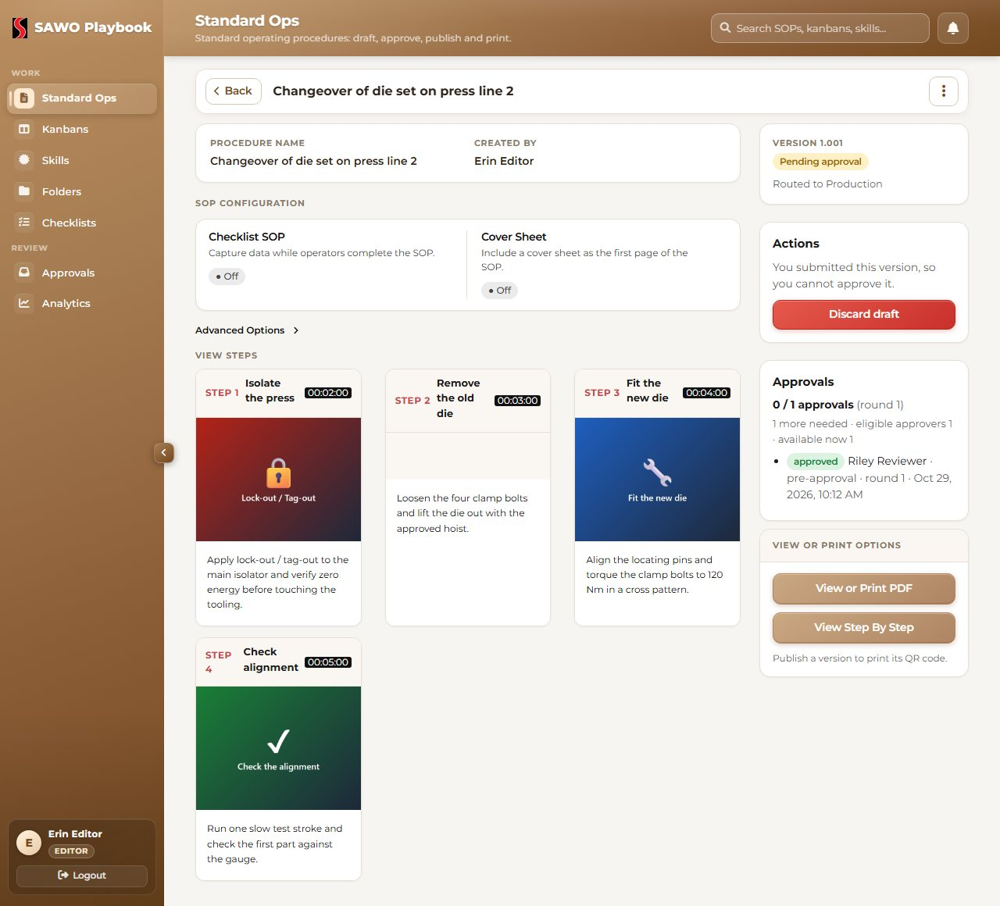
Figure 13. Riley (Pre Approver) has approved it. It's now waiting for the final approval.
You can also follow all your submissions on the Approvals page (Mine tab) and from the notifications bell.
You'll get an email when your SOP is approved, rejected or published.
Changed your mind? Click Discard draft in the Actions box to throw the draft away.
"Blocked" statusIf you see Blocked – no eligible Pre Approver / Approver exists for this group, nobody in your group can review the item yet. Admins are notified automatically. Ask your Admin to add a reviewer to the group.
SAWO Playbook · Editor User Guide2 · Standard Ops (SOPs)
2.7If your SOP is rejected
A rejected SOP comes back to you as a draft, with a red Rejected banner showing who rejected it and why.
Open the SOP from Standard Ops or Approvals → Rejected.
Read the reason in the red banner and in the Approvals box.
Click Edit draft (top right), make the changes and click Finish & Submit again. Or click Submit for approval on the SOP page if the draft is already fixed.
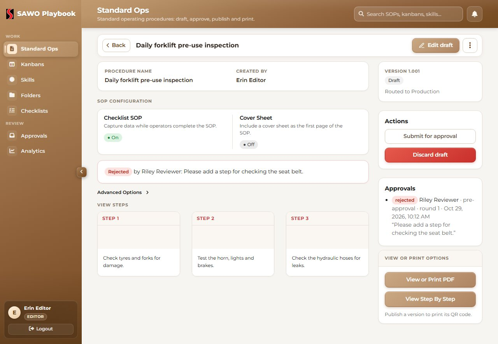
Figure 14. The reviewer asked for an extra step. The reason is shown in the banner.
2.8View, print and share a published SOP
Once published, the version box shows Published and the side panel offers view, print and share options.
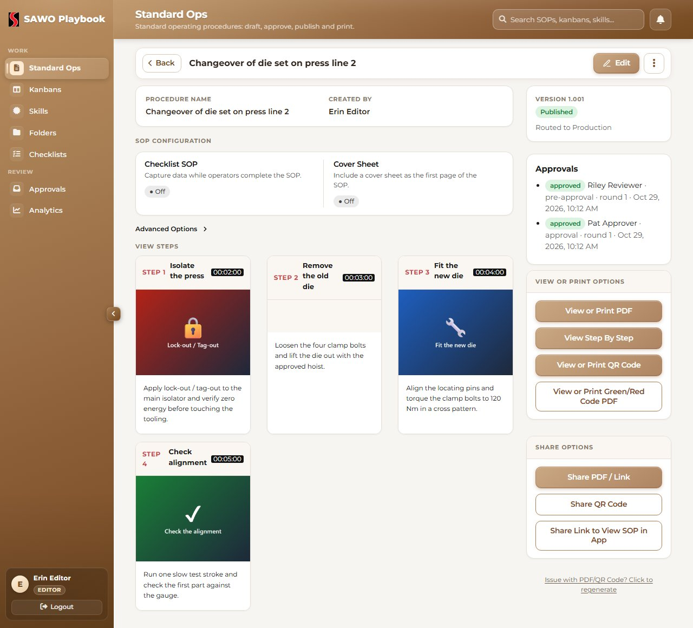
Figure 15. A published SOP with its steps, approval history and options.
SAWO Playbook · Editor User Guide2 · Standard Ops (SOPs)
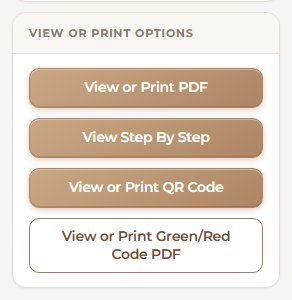
Figure 16. View or Print Options.
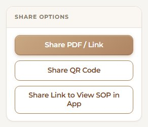
Figure 17. Share Options.
Option
What it does
View or Print PDF
Opens the SOP as a PDF, laid out with your PDF options. Print it or save it.
View Step By Step
Opens the kiosk view: one large step at a time with Previous / Next. Good for a tablet at the workstation.
View or Print QR Code
A printable QR code. Scanning it opens the current published version. When a new version is published, the same QR code shows the new one, so you don't need to reprint.
View or Print Green/Red Code PDF
A green/red QR code sheet for the workstation, coloured as set in the PDF options.
Share PDF / Link
Copies the QR link to your clipboard so you can paste it into an email or chat.
Share QR Code
Downloads the QR code as a PNG image.
Share Link to View SOP in App
Copies a link to this SOP page in SAWO Playbook. The person must be signed in to open it.
Issue with PDF? Click to regenerate
Rebuilds the PDF if it looks out of date or broken.
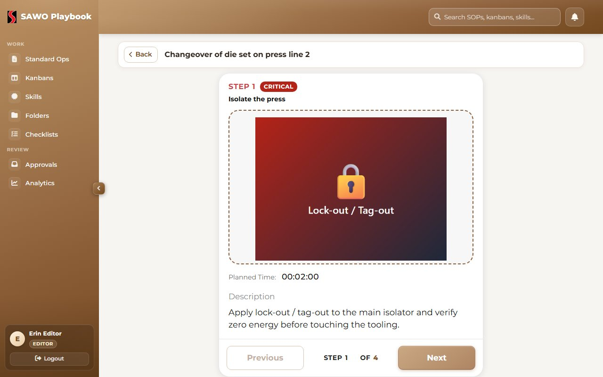
Figure 18. View Step By Step (kiosk view). Critical steps are flagged CRITICAL.
SAWO Playbook · Editor User Guide2 · Standard Ops (SOPs)
2.9Find SOPs: search, filter, views
The toolbar on the Standard Ops page helps you find any SOP quickly:
Search box: type part of a name or reference number.
Sort (⇅): Oldest, Newest, Date Modified, Alphabetical or Reference No.
Filter (funnel): by type, status (Published, Draft, Pending approval, Approved, Archived), folder, Checklist SOPs only, and who created it. Click Clear all to reset.
Folder icon: jumps to the Folders page.
⋮ menu: import and export options, if your role allows them.
Grid / List: cards or a compact table. Your choice is remembered.
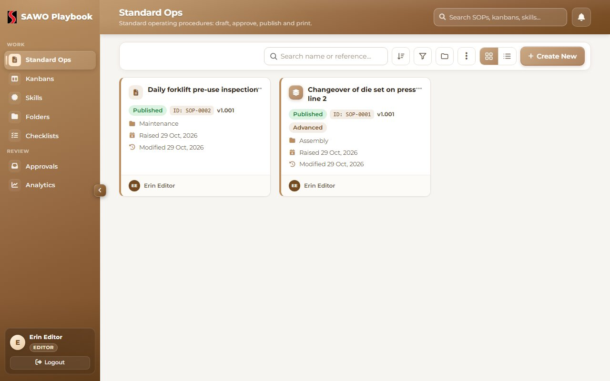
Figure 19. Grid view. Each card shows status, reference, version, folder and dates.
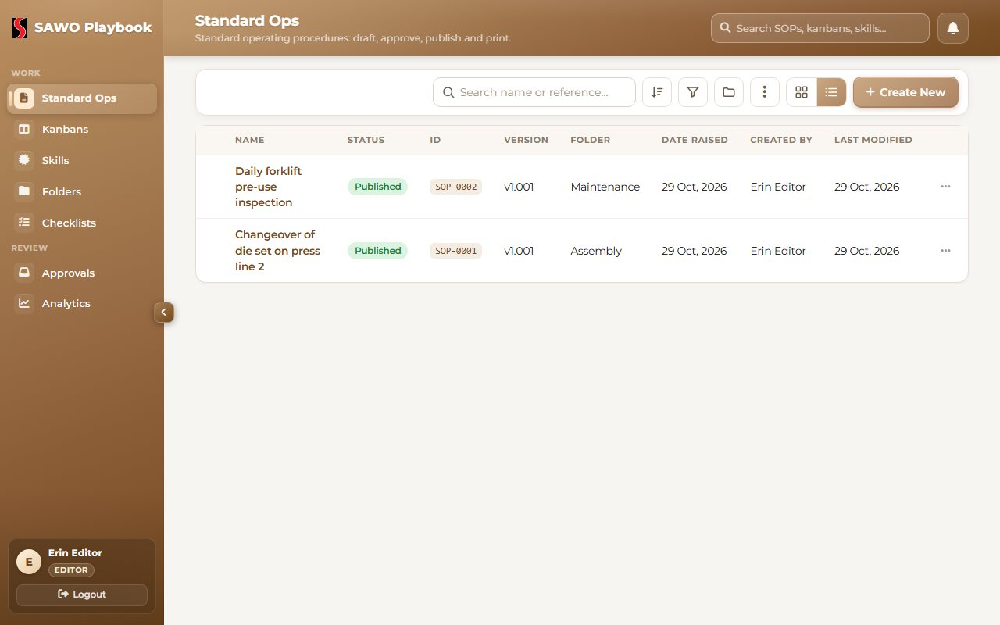
Figure 20. List view.
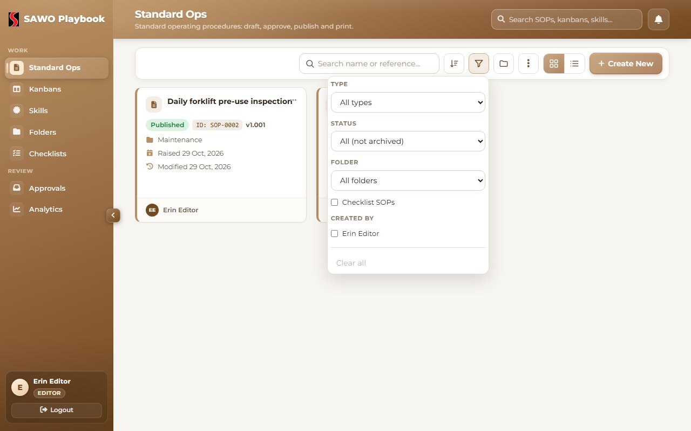
Figure 21. The filter panel.
2.10The SOP card menu
Click the … button on any SOP card (top right of the card) for quick actions:
SAWO Playbook · Editor User Guide2 · Standard Ops (SOPs)
2.11Update a published SOP
You never edit a published SOP directly. You create a new version, and the published one stays live until the new one is approved.
Open the SOP and click Edit (top right), or use Edit in the card menu.
A new draft version opens (e.g. v1.002 draft). Make your changes and write a Change summary under Advanced Options.
Click Finish & Submit. Or click Save As Draft now and submit later with Submit for approval on the SOP page.
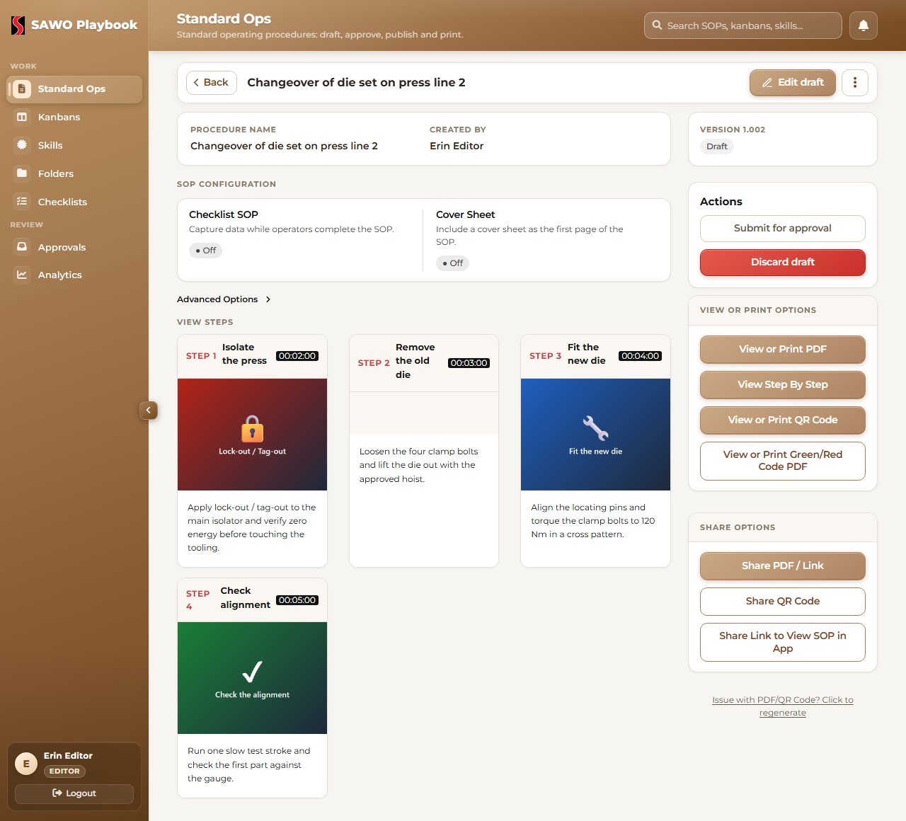
Figure 23. A new draft of a published SOP. The Actions box offers Submit for approval and Discard draft.
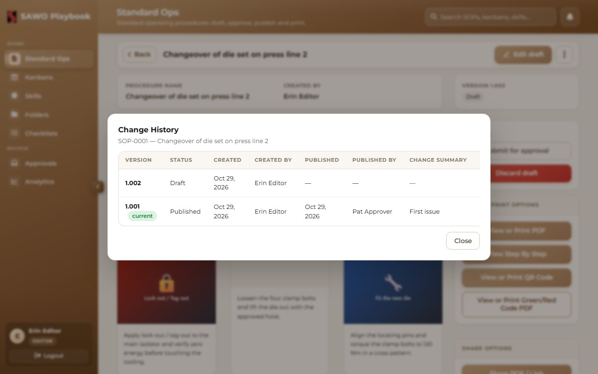
Figure 24. Change History lists every version, who created and published it, and its change summary.
Operators are not affectedUntil the new version is published, operators, QR codes and printed PDFs keep showing the current published version.
SAWO Playbook · Editor User Guide3 · Checklists
3Checklists
A Checklist SOP lets operators record a result for every step, e.g. a daily pre-use inspection.
3.1Make an SOP a Checklist SOP
In the SOP editor, switch on Checklist SOP under SOP Configuration (section 2.2), then submit as usual. You can only start a checklist run on a published Checklist SOP.
3.2Run a checklist
Open the published Checklist SOP and click Start checklist in the Actions box.
For each step click OK, NOT OK or N/A. Add a Comment or a Photo where useful, especially for NOT OK.
The counter at the top shows how many steps are answered (e.g. 4/4 answered).
When every step is answered, click Complete checklist. To stop without finishing, click Abandon.
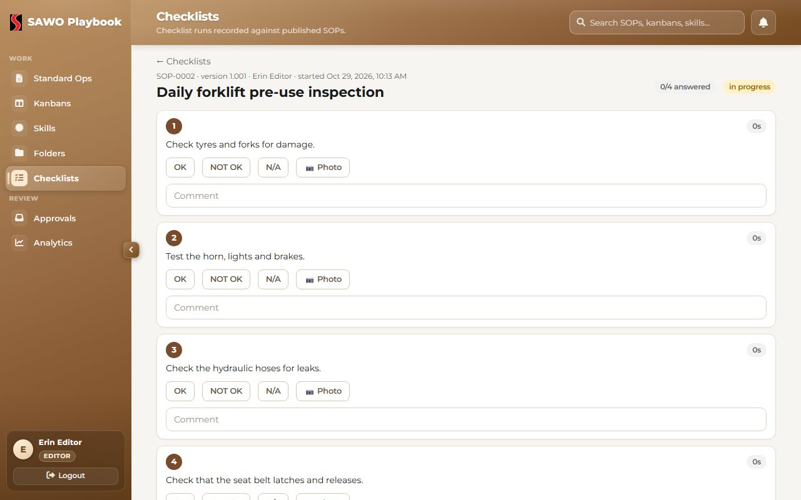
Figure 25. A new checklist run.
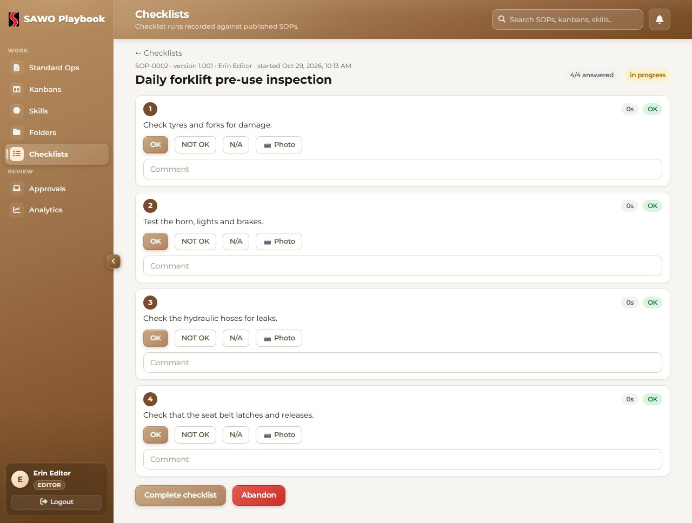
Figure 26. All steps answered, ready to complete.
3.3Review checklist runs
The Checklists page lists every run with the operator, start time, progress and status. As an Editor you see everyone's runs. Use the tabs to filter by In progress, Completed, Abandoned or With NOT OK steps, and click View to open a run.
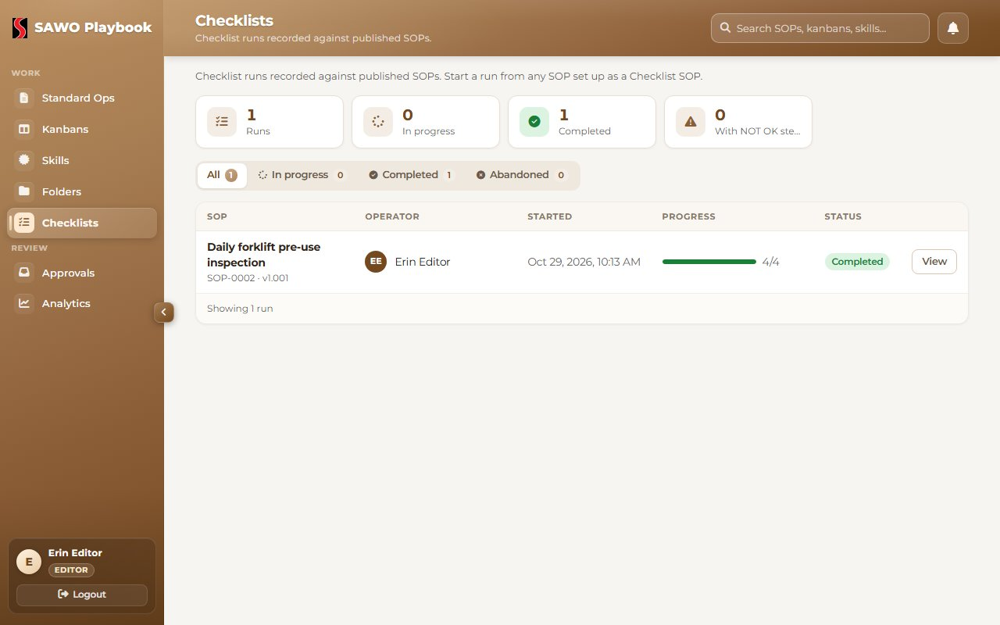
Figure 27. The Checklists page.
SAWO Playbook · Editor User Guide4 · Folders
4Folders
Folders group SOPs by area, line or department. Folders can have subfolders.
Create a folder
Click Folders in the sidebar.
Type a name in New folder name.
Choose where it goes: At the top level, or inside another folder to make a subfolder.
Click + Create folder.
Manage folders
Each folder row has buttons on the right:
Add subfolder (folder + icon): create a folder inside this one.
Rename (pencil).
Move to…: move the folder, with everything in it, under another folder.
Delete (bin).
Click a folder name to see its SOPs, including those in subfolders. SOPs not in a folder (top right) lists the SOPs still to be filed. To put an SOP into a folder, use Add to Folder in the SOP card menu, or set the folder in the editor's Advanced Options.
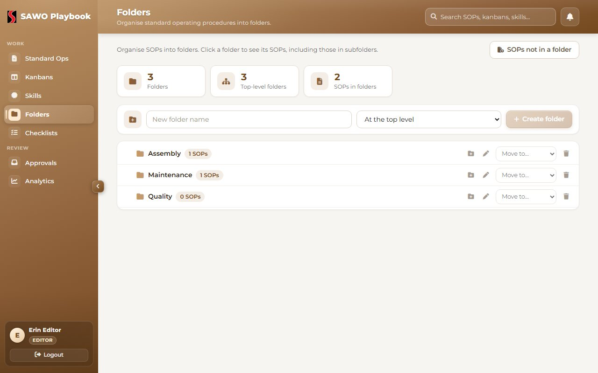
Figure 28. The Folders page.
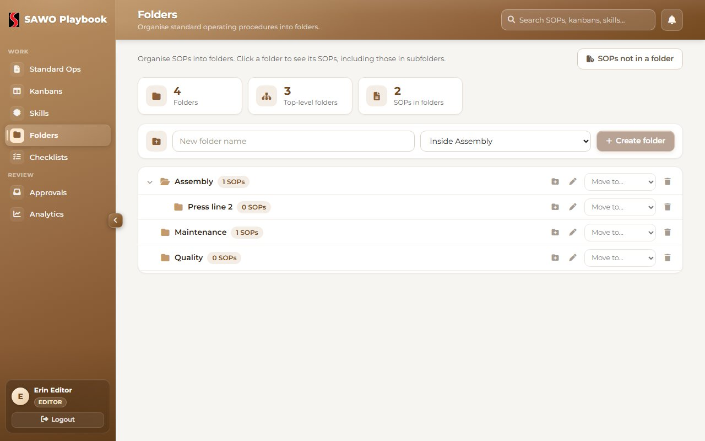
Figure 29. "Press line 2" created as a subfolder of Assembly.
SAWO Playbook · Editor User Guide5 · Kanban cards
5Kanban cards
A kanban card describes a part: what it is, where it's stored, when to re-order and how. The QR code on the back of the printed card opens the supplier's web page, an order email or an ordering SOP.
5.1Create a kanban card
Click Kanbans in the sidebar, then + Create New.
Add a picture on the left: click Upload photo, drag an image in, or paste one (Ctrl+V).
Choose the Kanban Type: Template 01, or Template 02 if you need price and carriage.
Fill in the Part Description and choose the QR Code Options (see below).
Fill in the part details. Only Sawo Inc Part Number is required.
Optional: choose a PDF Header Color, add custom fields and Tags (type a tag and press Enter).
Click Save draft.
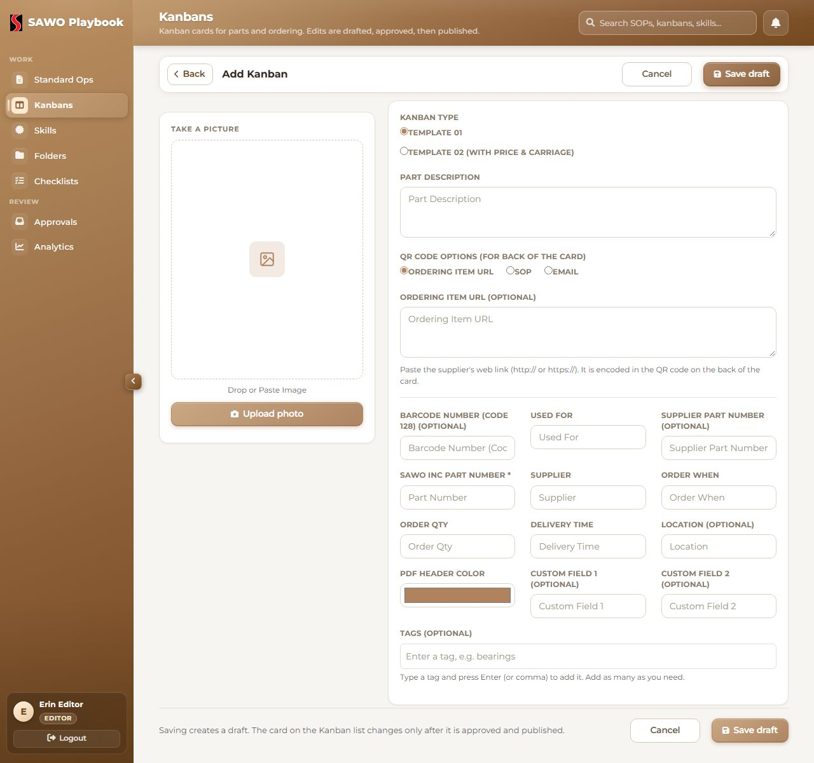
Figure 30. The Add Kanban form.
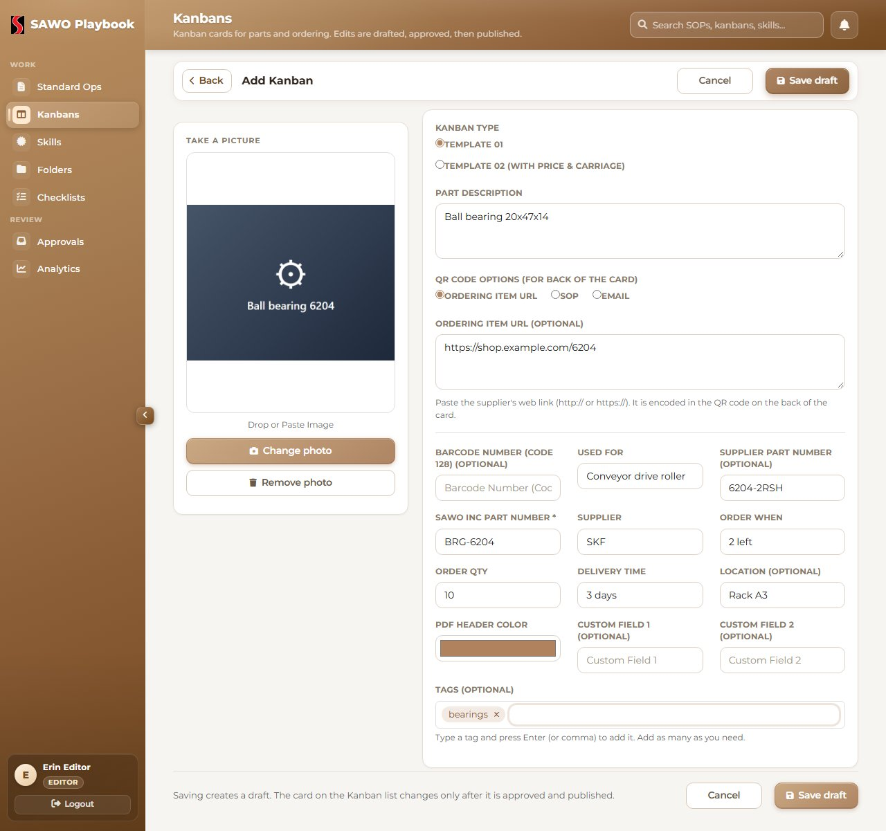
Figure 31. The form filled in for a bearing.
QR code option
Scanning the card's QR code…
Ordering Item URL
opens the supplier's web page. Paste the full link (https://…).
SOP
opens the chosen ordering SOP.
Email
opens a new order email to the address you enter, e.g. purchasing@…
Field
Example / note
Sawo Inc Part Number *
BRG-6204. Required. Shown as the card's name.
Supplier / Supplier Part Number
SKF / 6204-2RSH
Used For
Where the part is used, e.g. Conveyor drive roller.
Order When / Order Qty
The re-order point and quantity, e.g. 2 left / 10.
Delivery Time / Location
3 days / Rack A3
Barcode Number (Code 128)
Optional. Printed as a barcode on the card.
Price / Carriage
Template 02 only.
SAWO Playbook · Editor User Guide5 · Kanban cards
5.2Submit a new card for review
A brand-new card doesn't appear on the Kanbans page until it's published. Until then you'll find the draft on the Approvals page.
Click Approvals in the sidebar and open the Mine tab. Your new card is listed with stage Draft.
Click Open.
Check the details and click Submit for review. The status changes to Pending pre-approval.
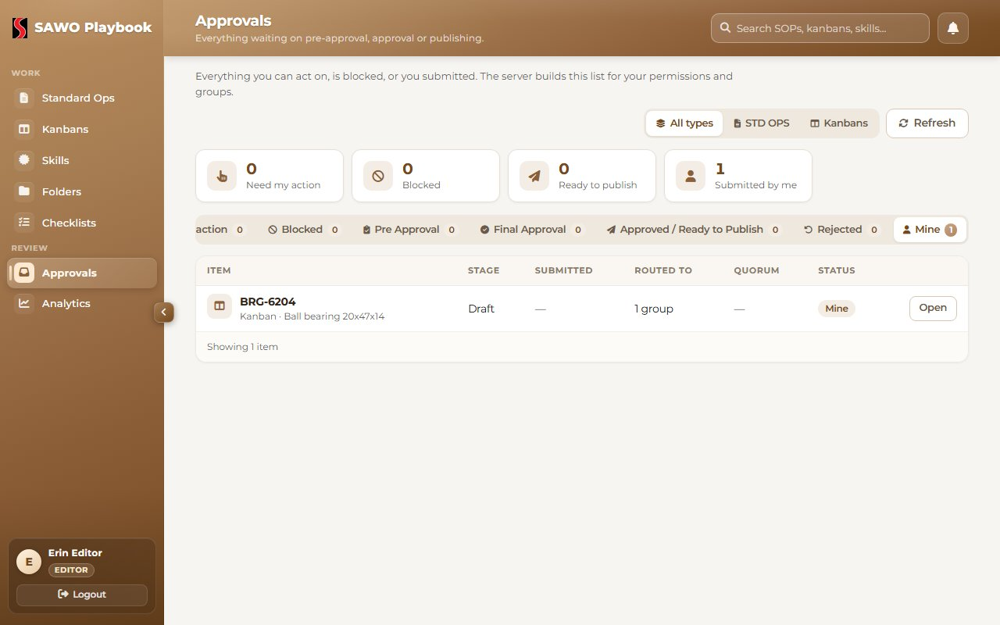
Figure 32. The new card in Approvals → Mine.
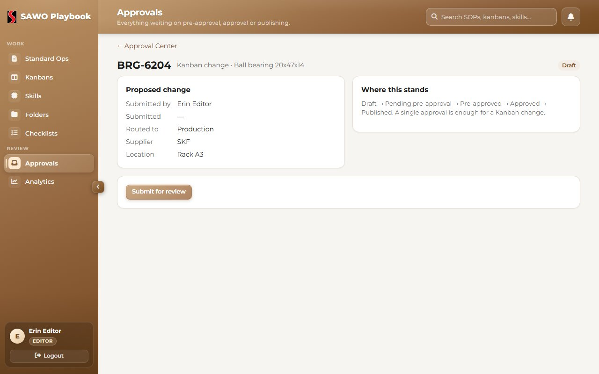
Figure 33. The draft card with Submit for review.
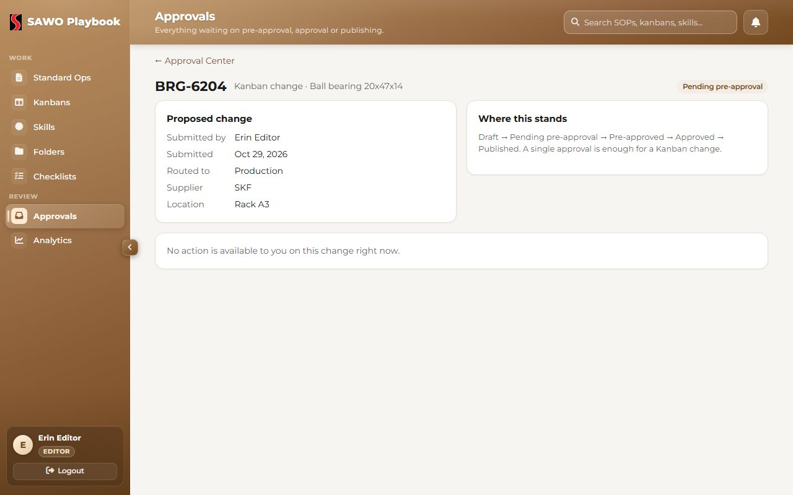
Figure 34. Submitted. It's now with the reviewers.
Kanban approvalsKanban changes follow the same Draft → Pre-approval → Approval → Published path as SOPs, but a single approval is always enough. If a reviewer rejects your card, it shows under Approvals → Rejected with the reason.
SAWO Playbook · Editor User Guide5 · Kanban cards
5.3Published cards: view, print, share
Once published, the card appears on the Kanbans page. Search by part, supplier or tag, and use sort and filter like on the SOP page. Click a card to open it.
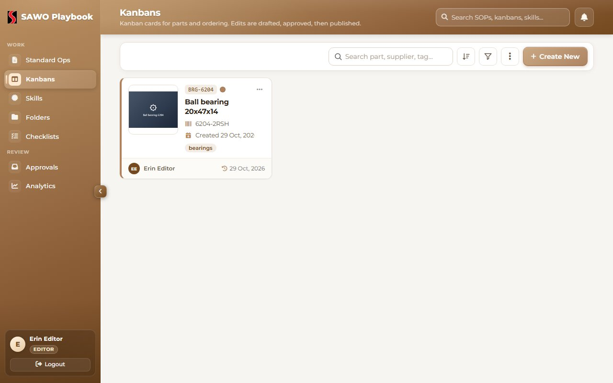
Figure 35. The Kanbans page with the published card.
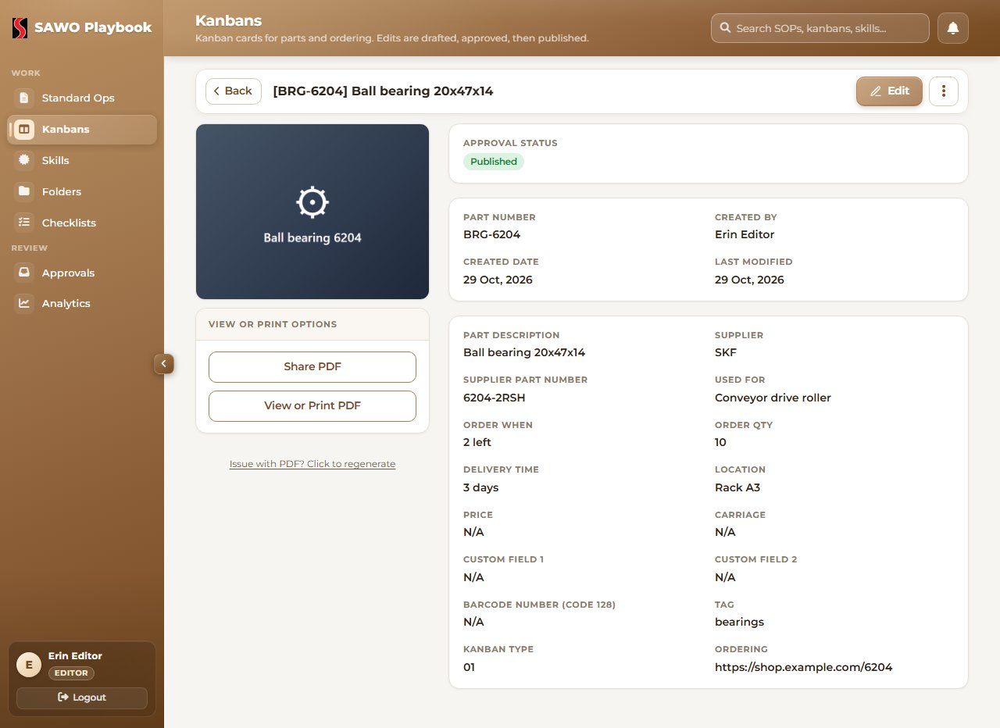
Figure 36. The card page: picture, approval status, all details, and the View or Print Options.
View or Print PDF: the printable kanban card, front and back with the QR code.
Share PDF: opens your device's share menu with the card's PDF file (on a computer, it downloads the PDF).
The ⋯ menu on each card in the list offers Edit, Duplicate (start a new card from this one), Change History and View or Print PDF.
SAWO Playbook · Editor User Guide5 · Kanban cards
5.4Change an existing card
On the Kanbans page click the card's ⋯ menu and choose Edit, or open the card and click Edit.
Change what you need (e.g. a new Order Qty) and click Save draft. You go back to the card page, and the Approval status shows Draft.
Click Submit for review. The status shows who it's waiting on.
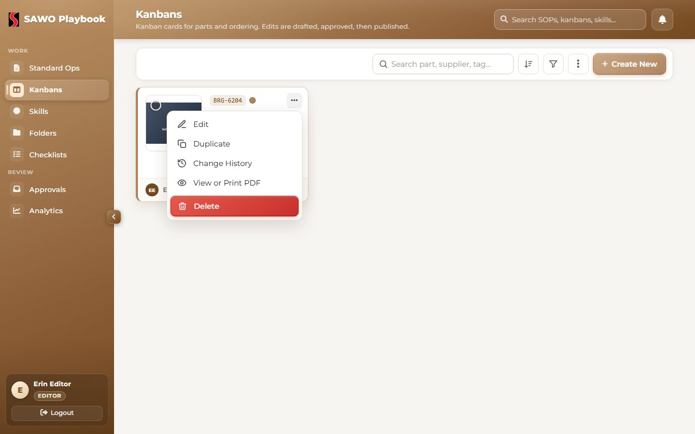
Figure 37. The card menu.
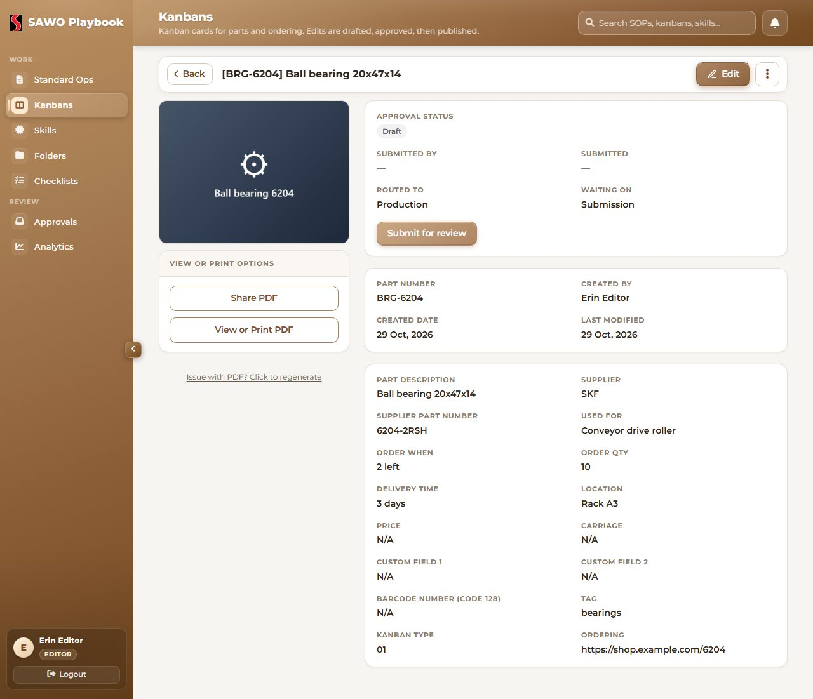
Figure 38. A change saved as a draft.
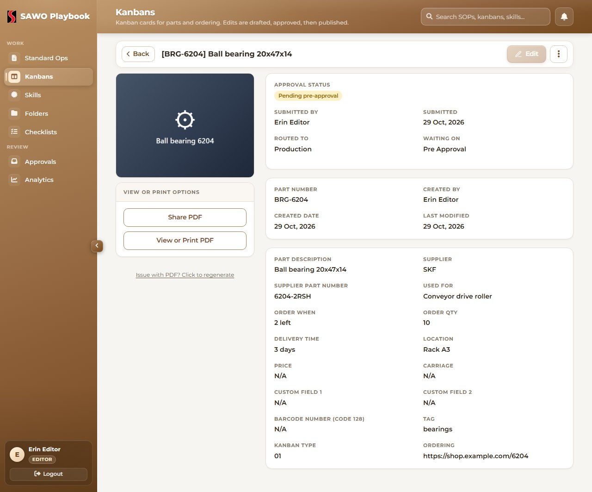
Figure 39. Submitted. It's waiting on Pre Approval.
The live card stays the sameUntil your change is published, the card, its PDF and its QR code keep showing the current details. While a change is in review the Edit button is disabled. You can edit again once the review is finished.
SAWO Playbook · Editor User Guide6 · Approvals
6The Approvals page
Everything you've submitted, and where it is now, for SOPs and kanbans in one place.
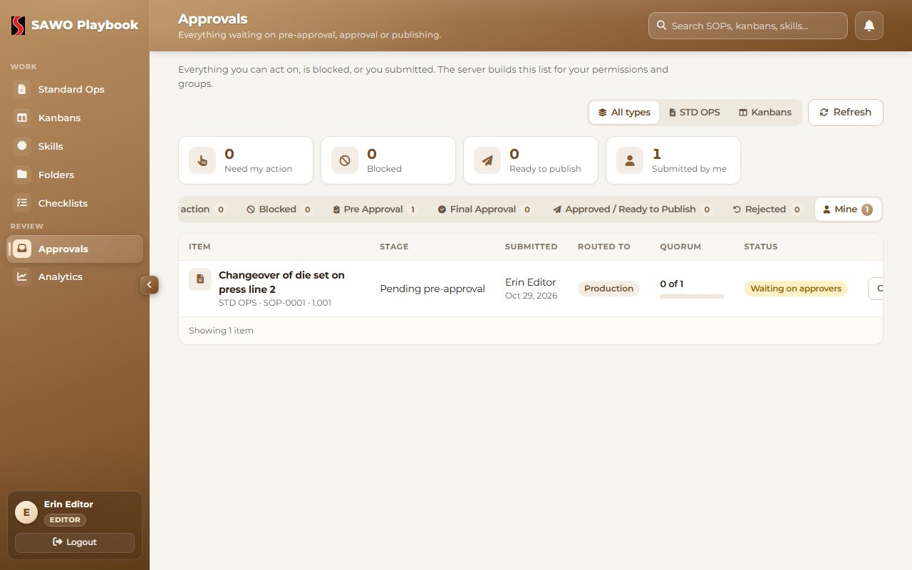
Figure 40. Approvals, Mine tab: one SOP waiting for pre-approval.
The summary tiles count items that Need my action, are Blocked, are Ready to publish, and were Submitted by me.
The type switch (All types / STD OPS / Kanbans) narrows the list. Refresh reloads it.
The tabs filter by stage. As an Editor you'll mostly use these:
Tab
Shows
Mine
Everything you created that isn't published yet, including drafts of brand-new kanban cards.
Rejected
Your items that a reviewer sent back, with the reason.
Blocked
Your items that have no eligible reviewer in their group (ask your Admin).
Pre Approval / Final Approval / Approved – Ready to Publish
Items at each stage that you can see.
Click Open on a row to go to the item. When everything is done, the list shows Nothing is waiting:
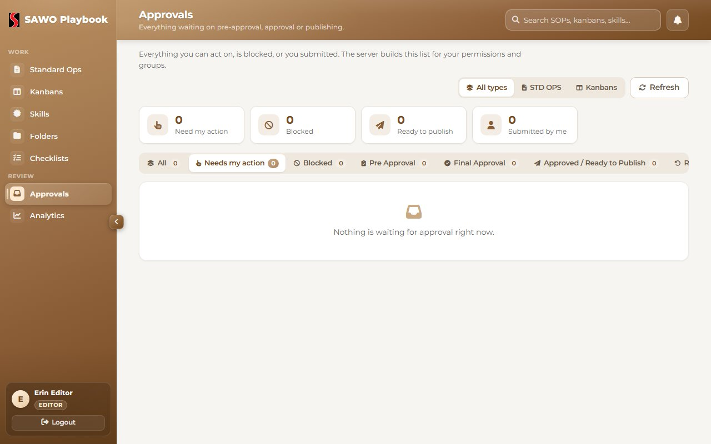
Figure 41. Everything has been published.
SAWO Playbook · Editor User Guide7 · Skills & training
7Skills & training records
The Skills page is a training matrix: one row per person and one column per published SOP.
Each cell shows a person's competency level on an SOP:
Level
Meaning
0
No Training
1
Knows Basic Principles
2
Demonstrates Basic Principles
3
Able to Work Alone
4
Able to Train Others
Record training
You can record training for the operators your Admin has assigned to you as their trainer.
On the Skills page, click the person's cell under the SOP. Or, on Standard Ops, open the SOP card menu (…) and choose Update Training Record.
Choose the Associate and the Competency level, and add Notes if useful.
Click Save.
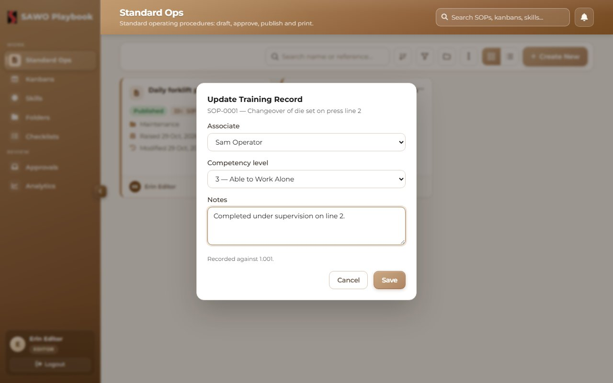
Figure 42. Update Training Record.
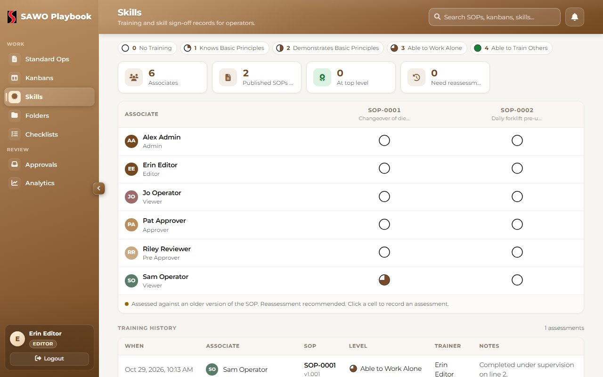
Figure 43. The skills matrix and training history.
ReassessmentTraining is recorded against the SOP's published version. When a new version is published, a small dot marks people assessed on an older version. They should be reassessed. The Need reassessment tile counts them.
SAWO Playbook · Editor User Guide8–10 · Analytics, Search, Profile
8Analytics
Analytics shows your activity: SOPs published, drafts in review, kanban cards and checklists completed, plus a daily activity chart, your most viewed SOPs and a list of events. Use the period buttons (7 days, 30 days, 90 days, 12 months) to change the time range.
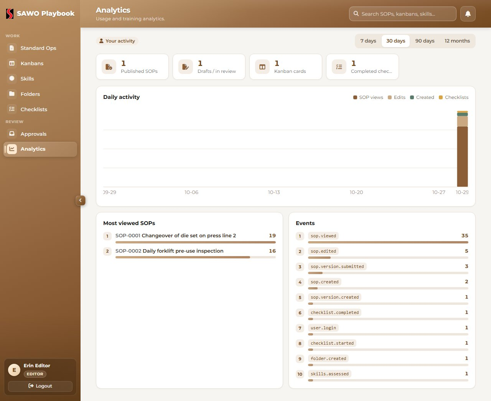
Figure 44. Analytics.
9Search
Type in the global search box in the header (Search SOPs, kanbans, skills…) and press Enter. Results are grouped into procedures and kanban cards. It searches names, reference numbers and the text of SOPs.
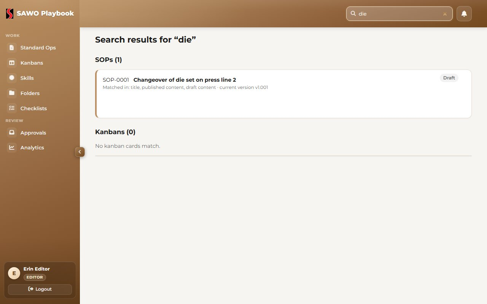
Figure 45. Search results for "die".
SAWO Playbook · Editor User Guide10 · Your profile
10Your profile, password & 2FA
Click your name at the bottom of the sidebar to open My profile.
Details: change the name other people see on SOPs, approvals and checklists, then click Save details.
Change password: enter your current password and a new one (at least 10 characters). This signs you out on your other devices.
Two-factor authentication: click Set up two-factor, scan the QR code with an authenticator app (Google Authenticator, Microsoft Authenticator, 1Password…) and enter the 6-digit code. From then on you'll be asked for a code at every sign-in.
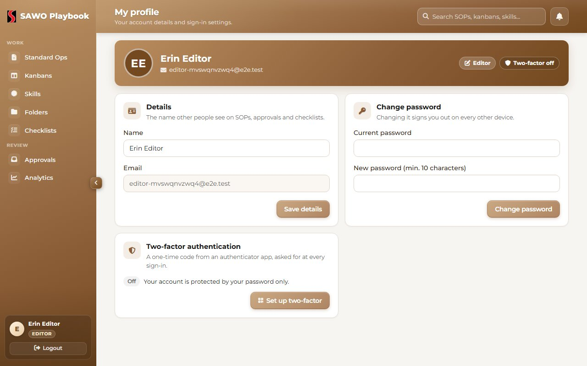
Figure 46. My profile.
Signing outClick Logout at the bottom of the sidebar, especially on shared computers.